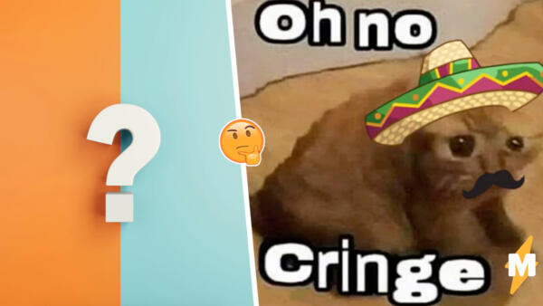

Популярные пикчи среди подростков и объяснение к ним
Примеры использования сленговых слов
Молодёжный сленг
Почему так важно понимать "язык" детей?
Взрослые люди часто не могут найти общий язык с подростками, хотя и безумно этого хотят. Каждому родителю важно быть в хороших отношениях с детьми, так что на этом сайте можно узнать значение и правильный контекст употребления этих слов при общении с подростками.
Рофл
"Рофл" - это шутка, или же смех до упаду. Также есть слово "рофлить". Его значение выходит из предыдущего, то есть "рофлить" означает шутить. Бывают разные интерпретации слова "рофл": рофлянчик,рофельно,рофлик и так далее.
Угар
"Угар" это слово, схожее по значению со словом "рофл". Но по большей части его значение склонятеся именно к умопомрачительному смеху, нежели чем к "шутке".
Кринж
 Слово "кринж" буквально переводиться с английского языка, как съеживаться от страха, содрогаться. Более распостраненным значением является аналогия "испанского стыда".
Бот или Ботяра
 Это слово пришло из английского языка, как и большинство других сленговых слов. Если перевести на русский, то "бот" означает "робот". Но в разговоре это слово значит "неумеха", человек, не знающий или не умеющий делать что-либо.
Это слово пришло из английского языка, как и большинство других сленговых слов. Если перевести на русский, то "бот" означает "робот". Но в разговоре это слово значит "неумеха", человек, не знающий или не умеющий делать что-либо.
Что ж, подведем итоги и заполним таблицу со значниями сленговых слов!
| Сленговое слово | Значение | Рофл | Шутка |
| Угар | Смех |
| Кринж | Испанский стыд |
| Бот | Неумеха |